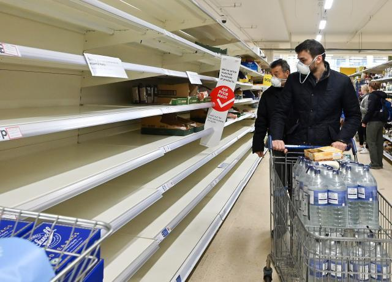

围炉特稿 | 全球视野下的疫情（下）
原文链接 备份链接 Coronavirus COVID-19 Global Cases by Johns Hopkins CSSE 上一期特稿中，我们看到了疫情对人们的生活造成的影响。病毒逐步扩散至世界各地的同时，与疫情相关的种种事件也占 …
体坛周报全媒体驻伦敦记者 刘川
即便只是呆在家里，你还是能感到英国的疫情正在以让人始料未及的速度转向全面爆发的高峰期。首相鲍里斯·约翰逊在周一开始承诺每天下午在唐宁街召开新闻发布会通报疫情。在“群体免疫”的闹剧之后，英国政府这周突然又开始调整政策，重新回到了争取大面积检测，强调隔离管控，陆续取消大型活动和关闭人群聚集场所，并且开始考虑在周末初步对伦敦进行封城的传统防控道路。

伦敦封城已不可避免
从周二上午开始，我的电子邮箱陆续开始收到相关的邮件：大英博物馆，泰晤士河的南岸艺术中心，以及泰特的各家美术馆都宣布从周三开始正式关闭。之前常去训练的两家击剑俱乐部，一家关闭了每晚的集训，不过仍然接受白天的私教预约，另一家则禁止60岁以上的易感人群进入，并废除了击剑比赛结束后双方握手的传统礼节，改以举剑敬礼。
人们日常生活的注意力现在全部集中在超市抢购上。英国的这一轮抢购潮从3月初悄然开始，一开始只是集中在卫生纸和洗手液等少数物品，媒体还以一副置身事外的嘲讽态度在分析抢购卫生纸这一行为背后的群体心理学。而等到了上周末，一听到政府准备遵循“群体免疫”这一病毒绥靖政策，带有停车场的那种大型超市立刻出现严重的挤兑现象，而平时货物充足的社区超市，新鲜蔬菜和水果也陆续出现断供，鸡蛋和牛奶货架也开始变得空空如也。
周三一大早，英国媒体已经吹风说关闭学校现在已成定局，在当天下午政府的新闻发布会确认之后，关于伦敦封城的消息又被大部分媒体转载。伦敦是这次英国疫情的重灾区，周三晚上的确诊数量已经近千，而按照政府的推算标准，英国首都的实际感染人数应该早已破万，如果再不采取措施，将迅速成为全球重灾区。
按照《金融时报》的说法，这次的封城措施将非常严格，绝大多数商店会在12小时前被要求关闭，而每户只准派一个代表出门采购生活必需品，超市届时将有执勤警力守护，而很多重要的生活必需品，将和战时一样实施配给制，每个人只许限购一到三件不等。而在周四一早，伦敦各条线路的40家地铁站宣布关闭，政府已经在加速完成封城的前期准备工作。
政府开始搭建停尸房
只是如此严格的封城令，到时如何执行将是一个未知数。周三开始不少伦敦市民看到有大批军队在市区及周边集结，有人感到恐慌和害怕，有人则稍感安心。BBC上线了大量居家生活指南的短视频，譬如如何在家里运动，如何主动调节隔离心态，如何用自制的肥皂水每天给手机消毒。不过讽刺的是，在相当一部分人开始在家里办公的周二，英国的移动网络立刻经历短暂的崩溃，民众仍然觉得政府和他们一样，根本都还没做好准备。
不过在观感上最令人震撼的，还是周二在威斯敏斯特国会大厦附近紧急搭建的一座大型白色帐篷（上图）。英国媒体透露这将是英国疫情扩散期间的第一座公共停尸房，可以临时储存102具尸体，政府还在紧急扩建当中，其容量在完成扩建之后会完成翻倍。似乎耸人听闻，但政府对类似的报道却并未进行否认。这也说明第一批被确诊感染的重症患者可能情况已经开始恶化，在相关资源紧缺的情况下，政府对作为危险污染源的尸体提前实施紧急处理预案，也是无奈之下的现实之举。
总之，英国几乎在一周之内从放任绥靖的状态进入到战时状态。这其中的态度改变像极了他们在二战前期左右摇摆的表现，约翰逊政府此前因为轻视和某些不切实际的幻想，在疫情刚刚爆发的时候耽误了整整一个星期的时间，这周不得不以有些狼狈的姿态进行修补。
只是在英国政府和媒体的多重引导和灌输之下，当地民众轻忽的防疫观念却不是在短期内能够迅速调整的。政府依旧在强调频繁洗手，但是民众早已买不到随身携带的酒精洗手液，此外你依然在街上看不到有人戴口罩，也依旧随处可见有人在咳嗽时完全不用手肘遮挡。在欧洲大陆已经发生过的不少悲剧将注定在英国重演，只是在惨烈程度和维持时间上略有差异罢了。
原文链接 备份链接 Coronavirus COVID-19 Global Cases by Johns Hopkins CSSE 上一期特稿中，我们看到了疫情对人们的生活造成的影响。病毒逐步扩散至世界各地的同时，与疫情相关的种种事件也占 …
原文链接 备份链接 3月2日。 天又下雨，阴沉得厉害。而且，有点像春节前后的寒冷。同事冒着雨，给我送来馒头花卷等食物。我已在文联大院里居住了三十年。多年来，经常得到邻居和同事的照顾，这是让我觉得倍感幸运的事。今天晚上，就是吃花卷和小米粥。 …
原文链接 备份链接 昨天想叫在东伦敦住的M和我视频连线、一起在线工作，结果她说，“同学，你得找个不被老板催到吐血的”，然后甩过来一个手机截屏，上面是从早六点到晚九点的四个闹钟。M是市场分析师，全球股市正一起流血狂跌，她的在家 …
原文链接 备份链接 意大利确诊数破千时，大部分英国人还在隔岸观火，有人甚至拿新冠病毒开玩笑。如今英国人聚集的社交网络上多的是祈祷上帝保佑的推文。有人调侃说，老外都跟在华人后面逛超市，华人买什么他们就买什么 文 |《财经》驻英国特约作者 文 …
原文链接 备份链接 实习记者 | 文思敏 编辑 | 倪 妮 眼下，居住在英国苏格兰首府爱丁堡的Naomi感到很无助。 Naomi来自中国台湾，在英国已经居住了近七年，丈夫James则是苏格兰本地人。从3月7日起，James开始出现咳嗽、 …